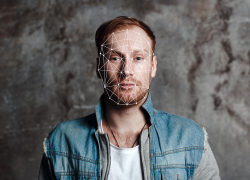

Our Technology
Our innovative technology is simple to use, easy to set up, and is highly scalable. This is how Social Arb works:
Scans the internet and social media for any images of an individual

Uses facial recognition to accurately identify if the image is genuine or not
Cross-references any use of a person’s name against online advertisements

Submits automated takedown notices if any breaches are found